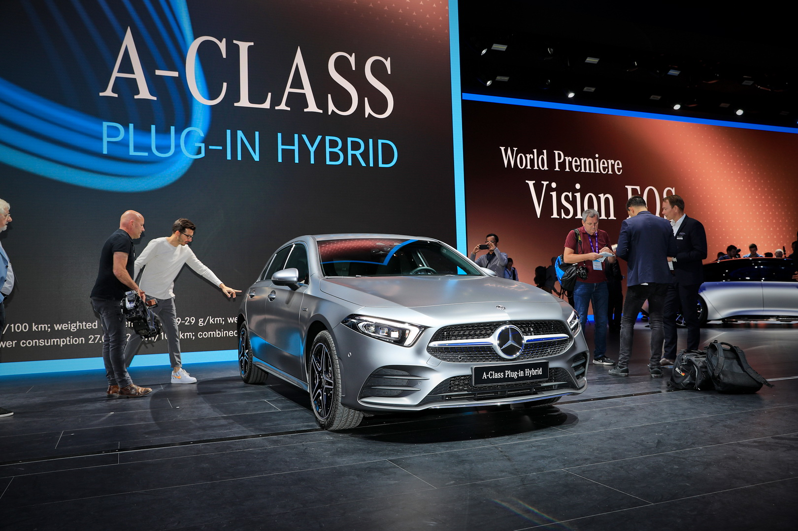
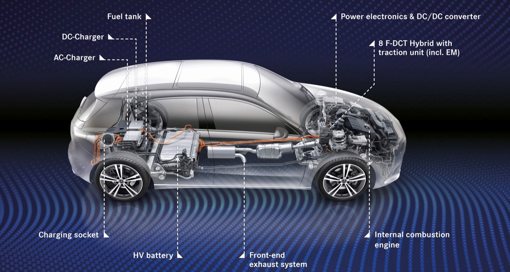
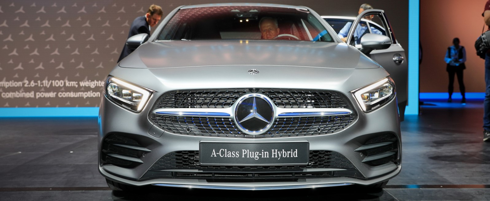
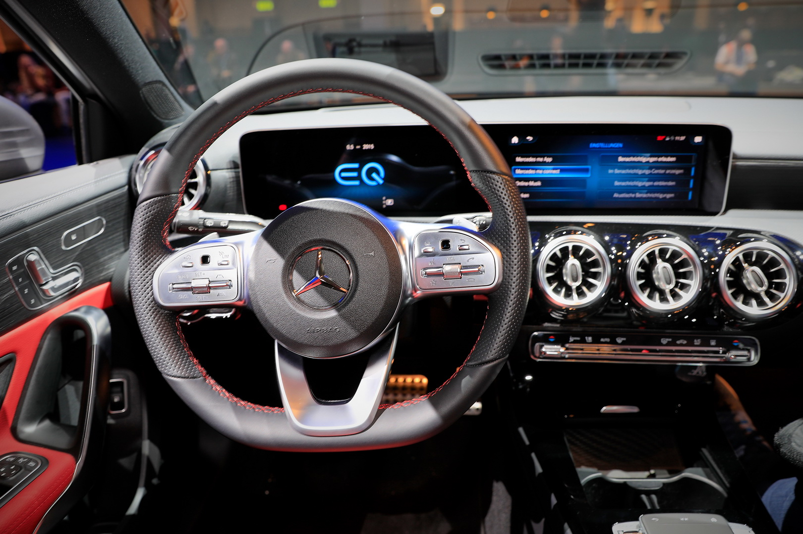

| The new A250e EQ BOOST |
|
|
Consumi record senza rinunciare alla potenza |
|
|  | Il marchio della stella di Stoccarda prende parte alla “festa dell'elettrificazione” con la sua nuova Mercedes-Benz Classe A 250 E, trovando un nuovo membro della famiglia EQ. La classe A sfoggia un nuovo motore 1.4 turbo, collocato in posizione trasversale, abbinato ad un cambio automatico doppia frizione 8F-DCT integrato con il propulsore elettrico che sincronizzerà la trazione alternando i due motori. E’ impiegata una batteria agli ioni di litio, fornita da Deutsche ACCUMOTIVE da 15,6 kWh: il propulsore a benzina fornisce 160 CV(118 kW) che, sommatti ai 75 kW di quello elettrico posizionato in prossimità del cambio, arrivano ad una potenza complessiva di 218 CV (160 kW) e una coppia di 450 Nm. Ciò consente di staccare uno 0-100 km/h in soli 6,7 secondi, per una velocità massima di 240 km/h. Il consumo dichiarato da Mercedes-Benz si attesta su 1.4l/100 km, in pratica oltre 70 km per ogni litro di carburante. Considerando un’autonomia dichiarata di 60-70 km in modalità elettrica, fino ad un massimo di 140 km/h, ci si potrebbe davvero spostare sfruttando solo la modalità EV. |
La solita classe A con uno sguardo al futuro |
|
| Se ti stai chiedendo "com'è da guidare?", beh è la solita Mercedes ma con un livello di silenziosità in più. Come la maggior parte delle auto del suo tipo, la A250e si avvia silenziosamente e si allontana altrettanto silenziosamente. Sul cruscotto sono presenti pratiche grafiche separate di carica e carburante per sapere esattamente di quanta autonomia si è in grado di fare e, in modalità Elettrica, sembra un bel po'. A differenza di alcune auto ibride con modalità elettrica, è possibile premere con una certa decisione sull'acceleratore e comunque utilizzare solo energia elettrica, facendo si di esser in grado di bruciare i competitors al semaforo grazie a tutta quella coppia istantanea. - Carmagazine UK |
 |
|  | |
Vogliamo parlare degli interni? |
|
| La plancia presenta due monitor affiancati da 10,25 pollici dai quali è possibile controllare tutte le funzioni della vettura. Lo schermo sinistro è dedicato alla strumentazione classica , mentre quello posto al centro della plancia presenta il sistema di infotainment MBUX. Si può interagire con questo tramite i tasti posizionati sul volante, i monitor touch, il pad sul tunnel centrale e i comandi vocali attivabili pronunciando la frase “Hey Mercedes”. Degna di nota la possibilità di scegliere tra ben 64 differenti illuminazioni d’ambiente, così come di grande effetto sono le bocchette di aerazione centrali ispirate al design aeronautico. Interessante la possibilità di usufruire del sistema Car-to-X che trasmette da veicolo a veicolo informazioni importanti per la sicurezza come le frenate d’emergenza o la presenza di un incidente lungo il tragitto. Il lusso la fa da padrona, con accostamenti pelle e metallo spazzolato, dando un feeling visivo e tattile di premium. |  |
Scheda tecnica |
|||
 |
|||
| Motore | 1332 4cyl inline + electric motor | ||
| Cavalli | (118+75)Kw - 160 Kw (218 CV) | ||
| Coppia | 450 Nm | ||
| Accelerazione 0-100 | 6.7 s | ||
| Consumo medio | 1.4 l / 100 km | ||
| Velocità massima | 240 km/h | ||